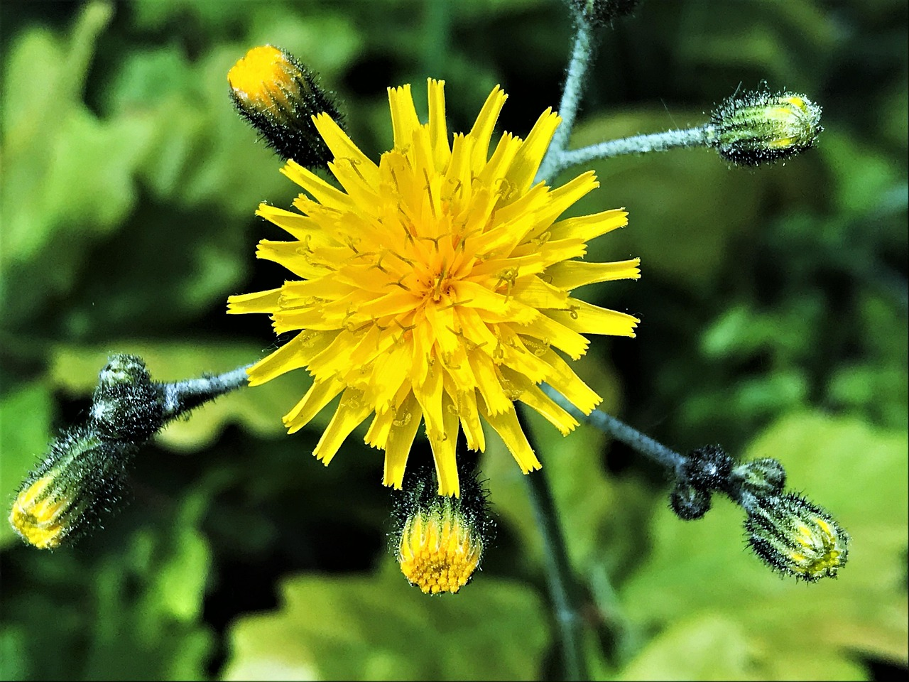

LAITERON
Sonchus oleraceus
Famille des Composées
NOMS COMMUNS :
Laitue de lièvre, Lait d'âne, Chardon blanc, Luceron, Laitue de muraille
CONSTITUANTS PRINCIPAUX :
Des sels minéraux, des vitamines, des glucides, des protéines
PARTIES UTILISÉES :
Les sommités aériennes
DESCRIPTION :
Le laiteron est une plante annuelle, à racine pivotante, de 1 mètre de haut, à tige dressée, creuse, peu ramifiée. Les feuilles sont alternes, à dents épineuses. Les fleurs sont des capitules plus petits que le Laiteron des champs, de 2 à 2,5 cm, à styles et stigmates verdâtres ou bruns, et à bractées souvent glabres. Les fruits sont des akènes bruns, striés, à aigrettes blanches.
CULTURE ET RÉCOLTE :
Originaire du Moyen-Orient et d'Europe, le laiteron se rencontre partout en Belgique, dans les champs et sur le bord des chemins.
Il croît jusqu'à une altitude de 2 000 mètres.
PROPRIÉTÉS : Carminative Cholagogue Stomachique Diurétique Emménagogue Dépurative
INDICATIONS : Grippe Infections urinaires Goutte Douleurs d'estomac Verrues Gastrite